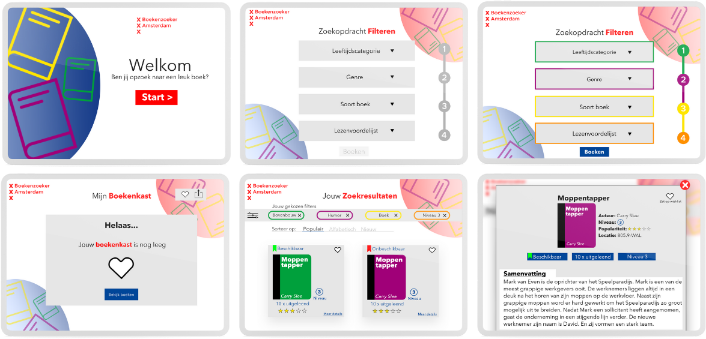

De boekenzoeker


Dit is een project waarbij ik een ontwerp heb gemaakt voor een online bibliotheek app. De huisstijl van Gemeente Amsterdam moest hier worden aangehouden. Het moest zo toegankelijk mogelijk zijn om een boek te vinden naar de gebruiker zijn of haar wensen. Hierbij is er rekening gehouden met de keuzes die de gebruiker kan maken.
- Datum: Maart 2021
- Vak: Visual interface design
- Prototype: Bekijk prototype